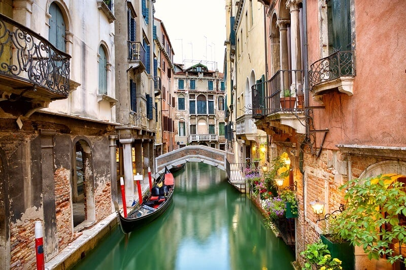

Certamente a Itália é um dos países com a história mais fragmentada no mundo todo, mas foi o berço de importantes civilizações, como os etruscos, os celtas e até mesmo os gregos. Foi justamente a cultura etrusca que influenciou e pavimentou o fortalecimento do Império Romano, a partir do século VIII a.C. A Civilização Romana se destacou como uma das principais forças da Antiguidade no aspecto econômico, cultural, político e militar. Alguns de seus legados se estendem até hoje, como o sistema numérico e alfabético, o calendário ocidental e o surgimento do Cristianismo. Mas o declínio romano, no século III, representou o início da divisão da região em vários Estados. Depois de anos de invasões estrangeiras e guerras entre as Cidades-Estados, um ensaio para a reunificação italiana veio a partir do Renascimento, período em que famílias poderosas estenderam o seu domínio por algumas regiões. Estas famílias passaram a financiar artistas que produziram trabalhos grandiosos. Leonardo da Vinci, Michelangelo, Botticelli e Rafael foram alguns destes nomes de destaque. Mas a unificação da Itália veio de fato apenas em março de 1861. No século XX, o país conviveu com o regime fascista, que chegou ao fim após a Segunda Guerra Mundial. Se você é daquelas pessoas que realmente conhece tudo sobre a Itália, sabe que a primeira capital do país foi outra, e não a atual, Roma. A cidade de Turim (para os italianos, Torino) foi a primeira capital após a unificação, em 1861. Foi nessa região em que o movimento começou a ganhar forma. Uma das mais antigas cidades italianas, fundada no século III a.C., era a residência da Casa de Savoia, a família real da região de Piemonte. Vittorio Emmanuelle II, chefe da casa, foi escolhido como primeiro rei da Itália unificada. Por quatro anos, Turim permaneceu com o status de capital italiana, perdendo o posto em 1865 para Florença. Somente em 1871 é que Roma foi reconhecida como a capital do país. Desde 2002, a Itália adotou como moeda oficial o euro, assim como grande parte dos países que fazem parte da União Europeia. Para aqueles que gostam de curiosidades da Itália, a moeda vigente antes da adoção do euro era a lira italiana. Quem vai viajar para país costuma ficar em dúvida sobre qual moeda levar. Por mais que o dólar seja aceito em vários lugares, o melhor é ter de fato o euro em uma viagem pelos maravilhosos destinos italianos.
Itália é uma das principais potências turísticas do mundo, tendo sido o quinto país mais visitado em 2018, de acordo com dados da Organização Mundial de Turismo da ONU. O último relatório da organização apontou que o território italiano foi visitado por mais de 62 milhões de turistas internacionais. Localizada no centro-sul da Europa, a terra de gênios das artes possui uma riqueza cultural histórica, que pode ser constatada em diversos destinos espalhados por suas 20 regiões. Vizinha da França, Áustria, Eslovênia e Suíça, a Itália é banhada pelo Mar Mediterrâneo, onde se encontram ilhas que fazem parte do território italiano — as maiores e mais importantes são as da Sicília e Sardenha. A costa italiana, aliás, é a 15ª maior do mundo, e ao longo dos quase 8 mil quilômetros de litoral se espalham cidades com praias encantadoras, que também contribuem para fortalecer o turismo local. Quem pretende conhecer a Itália, deve ter em conta quais são os documentos necessários para entrar no país. Para nós, brasileiros, a primeira boa notícia é que estamos isentos do visto de entrada em casos de permanência até 90 dias. O passaporte, claro, é item obrigatório para a sua viagem. No caso da Itália, a exigência é que ele tenha validade superior a três meses. Outro item indispensável é a contratação de um seguro viagem. Além dos documentos já citados, ao desembarcar no país, você deverá apresentar à imigração italiana passagem de volta e reserva do hotel onde ficará hospedado — ou Carta Convite assinada por um residente. Outra dica importante é que você comprove que terá condições financeiras de permanecer no país pelo período da sua viagem.


Conheça mais pontos turpisticos
Considerada uma das melhores do mundo, a culinária italiana desperta paixões. Cada um tem seu prato favorito. Por isso mesmo, sei que esse post vai dar polêmica. Afinal, baseado em que eu me dou ao direito de escolher as melhores comidas típicas da Itália? No Brasil e na Itália, provei alguns dos pratos mais tradicionais da velha bota. Além do meu próprio paladar, também ouvi amigos italianos e descendentes que vivem em São Paulo, daqueles que passaram a vida toda provando as receitas da “nonna”. E pra tirar dúvidas e ver mais opiniões, consultei outros rankings de comidas italianas, como na NDTV e no Walks of Italy, ambos em inglês, além de sites de gastronomia italiana, como Scatti di Gusto e Corriere, que mostram pratos tradicionais das diferentes províncias italianas.
Conheça os melhores restaurantes